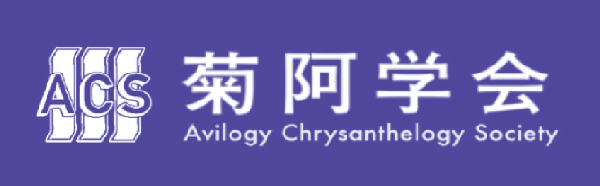

<div id=pagetop></div>

<title>菊阿学会 SSO共有保存機構</title>
<font size="5" face="sans-serif">
<div>
<!-- ▇▇ ドロップメニュー▇▇-->
<!DOCTYPE html><head><meta charset="UTF-8"><style>.my-sticky {
 position: sticky;
z-index: 100; 
 top: 0;

background-color: gray;

}
#dropmenu { display:flex; justify-content:center; 
 list-style-type: none;
 width: 960px;margin: 0 auto;
 padding: 0;
}
#dropmenu li {
 position: relative;
 width: 26%;
 margin: 0;
 padding: 0;
 text-align: center;
}
#dropmenu li a {
 display: block;
 margin: 0;
 padding: 16px 0;
 background: #ffffff;
 color: #717171;
 font-size: 28px;
 font-weight: bold;
 line-height: 1;
 text-decoration: none;
}
#dropmenu li ul {
 list-style: none;
 position: absolute;
 z-index: 100;
 top: 100%;
 left: 0;
 width: 100%;
 margin: 0;
 padding: 0;
}
#dropmenu li ul li {
 overflow: hidden;
 width: 100%;
 height: 0;
 color: #717171;
 transition: .2s;
}
#dropmenu li ul li a {
 padding: 13px 15px;
 background: #ffffff;
 text-align: left;
}

#dropmenu >li:hover >a { background: #CCD6DD }
#dropmenu >li:hover li:hover >a { background: #CCD6DD }
#dropmenu >li:hover >ul >li {
 overflow: visible;
 height: 55px;
}

 </style></head><body><ul class="my-sticky"id="dropmenu"> 
<li><a href="#">メニュー</a><ul>
<li><a href=" ">学会について</a></li>
<li><a href=" ">資料提供について</a></li>
<li><a href=" ">広報</a></li>
<li><a href=" ">サイトマップ</a></li>
</ul></li> 

<li><a href="https://drive.google.com/drive/folders/1-dJtiGTfasUyqvrYvwaxsQAqornoVnwy">資料図書館</a>
</li>

<li><a href="#">機構組織</a><ul>
<li><a href=" ">情報資料部</a></li>
<li><a href=" ">物的資料部</a></li>
</ul></li> 

<li><a href="#">姉妹機構</a><ul>
<li><a href="https://acs-ed.github.io/acs/3430141214159265358979.html">菊阿学会</a></li>

<li><a href="https://acs-ed.github.io/avirytionary/">新菊阿辞典</a></li>
<li><a href="https://acs-ed.github.io/avirypedia/">菊阿百科</a></li>
<li><a href="https://acs-ed.github.io/aviribrary/">菊阿文庫</a></li>

<li><a href="#">倫義協振会</a></li>
<li><a href="https://ilrn00.wixsite.com/iaofficial">関皇省</a></li>
</ul></li>

 </ul>
</body>

<!-- ▇▇ ドロップメニュー終了▇▇-->

<div style="padding: 5px 5px; background:#E9E9E9"></div>

<!--画像ギャラリー--><iframe src="gallery.html" style=" width:100%; height:28%; ">
</iframe>

<div style="padding: 5px 5px; background:#E9E9E9"></div>

<br><br>

<div style="padding: 0px 15px; font-size:28">

<div style="border:3px solid #7266D1; border-left-style:none; border-right-style:none; border-top-style:none;">
<b><font size="7">&nbsp;新着情報</font></b>
</div>

<!—▇▇ 広報ブロック▇▇—><div style="padding: 20px 0px 30px 0px; border: 1px solid #555555; 
border-left-style:none; border-right-style:none; border-top-style:none;"><div style="padding: 0px 15px; ">
<span style="font-size: 20px;">
<!—広報日—>
<font color="#555555">2022年03月08日</font>   &nbsp;&nbsp;
<!—タグ—></span><br>
<div style="padding: 6px 0px; "></div>
<!—本文—>
<font color="#32567c">
資料を提供してくださる方を募集しています。詳しくは募集ページをご覧下さい。
</font>
<!—本文終了—>
</div></div>
 <br> <!—▇▇ 広報ブロック終了 ▇▇—>

<!—▇▇ 広報ブロック▇▇—><div style="padding: 20px 0px 30px 0px; border: 1px solid #555555; 
border-left-style:none; border-right-style:none; border-top-style:none;"><div style="padding: 0px 15px; ">
<span style="font-size: 20px;">
<!—広報日—>
<font color="#555555">2022年03月04日</font>   &nbsp;&nbsp;
<!—タグ—>
<span style="display:inline-block; border:#1B56B4 1px solid; "><font color="#1B56B4">&nbsp;&nbsp;&nbsp;更新情報&nbsp;&nbsp;&nbsp;&nbsp;</font></span> </span><br>
<div style="padding: 6px 0px; "></div>
<!—本文—>
<font color="#32567c">
共有保存機構の頁を公開しました。
</font>
<!—本文終了—>
</div></div>
 <br> <!—▇▇ 広報ブロック終了 ▇▇—>

<!—▇▇ 広報ブロック▇▇—><div style="padding: 10px 0px 30px 0px; border: 1px solid #555555; 
border-left-style:none; border-right-style:none; border-top-style:none;"><div style="padding: 0px 15px; ">
<span style="font-size: 20px;">
<!—広報日—>
<font color="#555555">2022年02月02日</font>   &nbsp;&nbsp;
<!—タグ—>
<span style="display:inline-block; border:#1B56B4 1px solid; "><font color="#1B56B4">&nbsp;&nbsp;&nbsp;更新情報&nbsp;&nbsp;&nbsp;&nbsp;</font></span> </span><br>
<div style="padding: 6px 0px; "></div>
<!—本文—>
<font color="#32567c">
菊阿文庫・菊阿学資料図書館・共有資料会は統合し、共有保存機構として営業します。
</font>
<!—本文終了—>
</div></div></div>
 <br> <!—▇▇ 広報ブロック終了 ▇▇—>

</div>

<div style="border:3px solid #7266D1; border-left-style:none; border-right-style:none; border-top-style:none;">
<b><font size="7">&nbsp;新着資料</font></b>
</div>

<br><br><center>
<a href="https://acs-ed.github.io/aviribrary/"></a><br><br>
<a href="https://acs-ed.github.io/acs/共資部.html"></a><br><br>
</center>
<br><br><br>
<!--
情報保存部
物的保管部
 ー だっち君/だっちょ君製品買収事業部


-->
<center>
<script language="JavaScript" type="text/javascript">
function nextPage(){
search=document.docsrch.pass4.value;
location.href="https://drive.google.com/file/d/"+search;
}
</script>
<form name="docsrch">
  <font size="5" face="sans-serif"></font> <font size="5">
  <input type="search" name="pass4" placeholder="33桁の保管番号を入力して検索" style="width: 450pt; height: 50pt; font-size:100%;"></font>
 <input type="button"  value="閲覧" onClick="nextPage();" style="width: 90pt; height: 50pt; font-size:100%; ">

15kGKOHqOwU8oFLV0zlDdvh6

</center>


<meta http-equiv="X-UA-Compatible" content="IE=Edge,chrome=1">
    <meta name="viewport" content="width=device-width,initial-scale=1.0">
<!--==============レイアウトを制御する独自のCSSを読み込み===============-->
<link rel="stylesheet" type="text/css" href="https://coco-factory.jp/ugokuweb/wp-content/themes/ugokuweb/data/reset.css">
<link rel="stylesheet" type="text/css" href="https://coco-factory.jp/ugokuweb/wp-content/themes/ugokuweb/data/9-2-1/css/9-2-1.css">
</head>

<body>
<h2>9-2-1　任意の場所をクリックすると隠れていた内容が開く</h2>
<ul class="accordion-area">
<li>
<section>
<h3 class="title">お見積もりの目安を教えてください。</h3>
<div class="box">
<p>内容によって変化いたしますのでまずはお問い合わせフォームよりご相談ください。</p>
</div>
</section>
</li>
<li>
<section>
<h3 class="title">地方ですが発注は可能でしょうか</h3>
<div class="box">
<p>可能です。お気軽にご相談ください。</p>
</div>
</section>
</li>
<li>
<section>
<h3 class="title">セミナーやイベントの出演を依頼したいのですが</h3>
<div class="box">
<p>お問い合わせフォームより日時や内容などをご記入いただきご相談ください。</p>
</div>
</section>

</li>
</ul>

<script src="https://code.jquery.com/jquery-3.4.1.min.js" integrity="sha256-CSXorXvZcTkaix6Yvo6HppcZGetbYMGWSFlBw8HfCJo=" crossorigin="anonymous"></script>
<!--CodePenプレビュー用にコメントアウトしています。※CodePenで読み込んだJSとHTMLで読み込んだJSがバッティングして挙動がおかしくなっているため。ご利用の際はコメントを取り除いてご利用ください。<script src="https://coco-factory.jp/ugokuweb/wp-content/themes/ugokuweb/data/9-2-1/js/9-2-1.js"></script>-->

<style>

@charset "UTF-8";

/*==================================================
アコーディオンのためのcss
===================================*/

/*アコーディオン全体*/
.accordion-area{
    list-style: none;
    width: 96%;
    max-width: 900px;
    margin:0 auto;
}

.accordion-area li{
    margin: 10px 0;
}

.accordion-area section {
border: 1px solid #ccc;
}

/*アコーディオンタイトル*/
.title {
    position: relative;/*+マークの位置基準とするためrelative指定*/
    cursor: pointer;
    font-size:1rem;
    font-weight: normal;
    padding: 3% 3% 3% 50px;
    transition: all .5s ease;
}

/*アイコンの＋と×*/
.title::before,
.title::after{
    position: absolute;
    content:'';
    width: 15px;
    height: 2px;
    background-color: #333;
    
}
.title::before{
    top:48%;
    left: 15px;
    transform: rotate(0deg);
    
}
.title::after{    
    top:48%;
    left: 15px;
    transform: rotate(90deg);

}
/*　closeというクラスがついたら形状変化　*/
.title.close::before{
transform: rotate(45deg);
}

.title.close::after{
transform: rotate(-45deg);
}

/*アコーディオンで現れるエリア*/
.box {
    display: none;/*はじめは非表示*/
    background: #f3f3f3;
margin:0 3% 3% 3%;
    padding: 3%;
}

/*========= レイアウトのためのCSS ===============*/


h2{
    text-align: center;
    margin: 30px 0;
    font-size:1rem;
}

</style>
<script>

//アコーディオンをクリックした時の動作
$('.title').on('click', function() {//タイトル要素をクリックしたら
var findElm = $(this).next(".box");//直後のアコーディオンを行うエリアを取得し
$(findElm).slideToggle();//アコーディオンの上下動作
    
if($(this).hasClass('close')){//タイトル要素にクラス名closeがあれば
$(this).removeClass('close');//クラス名を除去し
}else{//それ以外は
$(this).addClass('close');//クラス名closeを付与
}
});

//ページが読み込まれた際にopenクラスをつけ、openがついていたら開く動作※不必要なら下記全て削除
$(window).on('load', function(){
$('.accordion-area li:first-of-type section').addClass("open"); //accordion-areaのはじめのliにあるsectionにopenクラスを追加
$(".open").each(function(index, element){//openクラスを取得
var Title =$(element).children('.title');//openクラスの子要素のtitleクラスを取得
$(Title).addClass('close');//タイトルにクラス名closeを付与し
var Box =$(element).children('.box');//openクラスの子要素boxクラスを取得
$(Box).slideDown(500);//アコーディオンを開く
});
});

</script>

<br><br>
</div><!--メニュー用-->

<!-- ▇▇ ここからフッダー ▇▇ -->

<a href="#pagetop">
<div style="padding: 20px 20px; background: #eeeeee; border: 2px solid #423795; 
border-left-style:none; border-right-style:none;" >
<center><b> <font color="#423795">頁上部へ戻る</font></b></center>
</div></a>

<div style="padding: 20px 20px; background: #423795">
<font color="white">
<center>
<a href="https://acs-ed.github.io/acs/3430141214159265358979.html"></a>
<a href="https://drive.google.com/drive/u/0/mobile/folders/1-dJtiGTfasUyqvrYvwaxsQAqornoVnwy"></a>


</center>
<div style="padding: 20px 2px 0px 2px;></div></div></div>
<a href= "https://acs-ed.github.io/sso/機構について.html" style="text-decoration: none;"><font color="white">❯&nbsp 機構について</font></a>
<hr>
❯&nbsp <a href= "https://acs-ed.github.io/sso/広報.html" style="text-decoration: none;"><font color="white">広報</font></a>
<hr>
❯&nbsp <a href= "https://acs-ed.github.io/sso/資料提供について.html" style="text-decoration: none;"><font color="white">資料提供について</font></a>
<hr>
❯&nbsp <a href= "https://acs-ed.github.io/sso/情報資料部.html" style="text-decoration: none;"><font color="white">情報資料部</font></a>
<hr>
❯&nbsp <a href= "https://acs-ed.github.io/acs/物的資料部.html" style="text-decoration: none;"><font color="white">物的資料部</font></a>
<hr>
❯&nbsp <a href= "https://acs-ed.github.io/sso/sitemap.html" style="text-decoration: none;"><font color="white">サイトマップ</font></a>
</div></div><div style="padding: 0px 10px; background: #312D71">
<br>
<br>
<font color="white">
<div style="text-align: right">

</div>
<div style="text-align: right;">
<span style="font-size: 19px;">
© 2020 Avilogy Chrysanthelogy Society&nbsp;&nbsp;
<br><br></span></font>
</footer></div>
